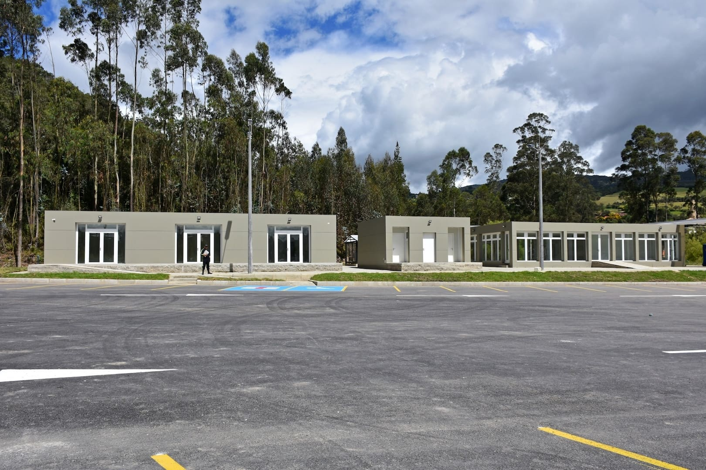

Estructuras de despliegue rápido

SmartBrix ofrece soluciones temporales o permanentes versátiles, confiables y hechas a medida para adaptarse a cualquier necesidad.
Nuestros diseños se ajustan a los estándares internacionales de construcción con el más alto nivel de calidad.
Asesoramos a nuestros clientes en una solución técnica durante todo el proceso, desde el planteamiento de diseño hasta la entrega llave en mano del proyecto.
Las estructuras de despliegue rápido ofrecen ventajas que los hacen sobresalir frente a otros tipos de construcción:
- No requieren de columnas internas otorgando mayor espacio útil y facilidad de movimiento para almacenar y operar montacargas y vehículos.
- Su sistema modular les permite adaptarse al tamaño que el cliente necesite.
- La cubierta de membrana de PVC elimina la necesidad de iluminación artificial durante el día.
- Su sistema de ventilación natural proporciona un entorno sin humedad.
- El acero es un material duradero y sostenible que ofrece estabilidad, resistencia y flexibilidad junto con buena apariencia.
Nuestras construcciones modulares cuentan con la siguiente normativa:
- Resistencia sísmica NSR-10
- Iluminación y alumbrado público RETILAP
- Instalaciones eléctricas RETIE
- Resistencia al fuego ASTM - C726